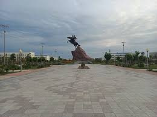
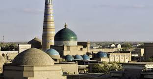
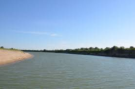

Xush kelibsiz! Urganch — qadimiy tarix va zamonaviy taraqqiyot uyg‘unlashgan shahar
| T/r | Ko‘rsatkich | Qiymat | Rasm | Havola |
|---|---|---|---|---|
| 1 | Aholisi (2024 yil holatiga) | 152 000 kishi | |
Ko‘rish |
| 2 | Maydoni | 39 km² | |
Ko‘rish |
| 3 | Hududiy markazi | Xorazm viloyati |  | Ko‘rish |
| 4 | Asos solingan yili | X asr |  | Ko‘rish |
| 5 | Asosiy daryo | Amudaryo |  | Ko‘rish |
| Manba: | Urganch shahar hokimligi ma’lumotlari | |||